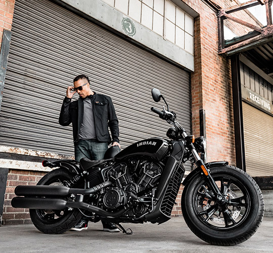

Indian Scout Bobber Sixty Starting at $8,999 US MSRP BOOK A TEST RIDE
FEATURES DESIGNED TO MAKE A STATEMENT
The Scout Bobber Sixty has blacked-out, stripped-down bobber styling you want with nothing you don't.ENGINEERED FOR EASE The lightweight, cast aluminum frame and low seat make for an expertly balanced bike that's easy to handle at all speeds. ICONIC BOBBER STYLING A side-mounted license plate and tail light with turn signals flaunts the chopped rear fender. MORE ACCESSIBLE THAN EVER Get back in black starting at $8,999*, with payments as low as $111 / month**  MAKE A STATEMENT Turn heads wherever you ride. STRIPPED DOWN TANK BADGE Bold block lettering is a proud celebration of the Indian Motorcycle legend. FAST FORWARD 78 horsepower and 65 ft-lbs of torque deliver a thrilling ride.